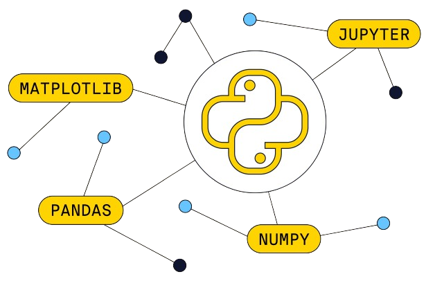
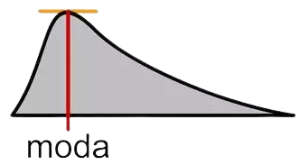
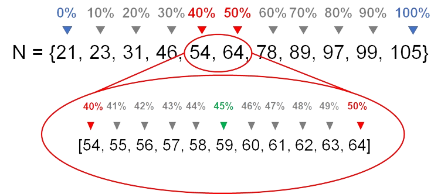
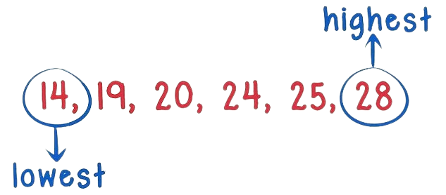
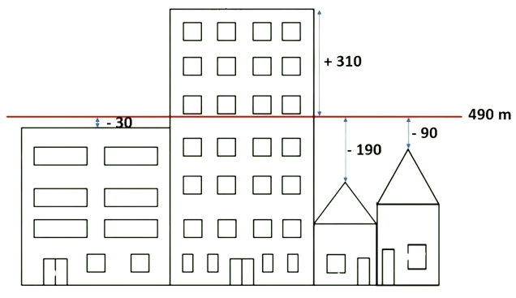

Estatística
Estatística é a ciência que apresenta processos próprios para coletar, apresentar e interpretar adequadamente conjuntos de dados, sejam eles numéricos ou não. Seu objetivo é apresentar informações sobre dados em análise para que se tenha maior compreensão dos fatos que os mesmos representam.
A Ciência de Dados, portanto, envolve a utilização de várias linguagens de programação, ferramentas e técnicas para otimizar a análise de dados.
Python
Em nossas aulas, utilizamos a linguagem de programação Python para manipular e visualizar de dados, que, juntamente com suas bibliotecas Pandas, Numpy e Matplotlib, permite realizar tarefas complexas de rapidamente.

A plataforma usada para desenvolvimento e execução de códigos, foi o Google Colaboratory (Colab) diretamente no navegador.
Amostragem
A amostragem refere-se ao processo de seleção de uma parte representativa de um conjunto de dados maior para análise estatística.
Existem diferentes métodos de amostragem:
| Tipo de Amostragem |
Descrição |
| Amostragem Aleatória Simples |
Cada elemento da população tem a mesma probabilidade de ser selecionado. |
| Amostragem Estratificada |
Divide a população em estratos e seleciona uma amostra aleatória simples de cada estrato. |
| Amostragem Sistemática |
Os elementos são selecionados em intervalos fixos a partir de uma lista ordenada da população. |
Pandas
Para isso, utlizamos a biblioteca Pandas, a qual oferece métodos para realizar amostragem simples e complexa.
| Método |
Sintaxe |
Descrição |
| iloc |
df.iloc[linha, coluna] |
Seleciona dados por índices inteiros, baseado na posição. |
| loc |
df.loc[índice, coluna] |
Seleciona dados por rótulos de índices ou por condições booleanas. |
| concat |
pd.concat([df1, df2, ...]) |
Concatena DataFrames ao longo de um eixo específico. |
| sample |
df.sample(n=None, frac=None, replace=False, random_state=None) |
Retorna uma amostra aleatória de itens de um DataFrame. |
| sort_index |
df.sort_index(axis=0, level=None, ascending=True, inplace=False, ...) |
Ordena os rótulos de índice ao longo de um eixo. |
Já no Colab, importamos como exemplo um arquivo xls (excel) sobre os tribulantes da obra Titanic. Assim, realizamos diversas amostragens desses dados, a partir das linhas e colunas da tabela.
Moda
A moda de um conjunto de dados é o valor que ocorre com maior frequência. Conforme o número de valores que ocorrem com a mesma frequência máxima, a moda pode ser: unimodal, bimodal e polimodal.

Assim, semelhantemente a amostragem, utilzamos os métodos do Pandas para encontrar as modas da tabela 'Titanic' de diferentes formas.
Percentil
O percentil é calculado ordenando todos os valores em um conjunto de dados e dividindo-os em 100 partes, cada uma com uma percentagem de dados aproximadamente igual.

No Colab, calculamos o percentil de array e das colunas do DataFrame com os métodos da biblioteca.
Amplitude
A amplitude é calculada subtraindo o menor valor observado (mínimo) do maior valor observado (máximo) em um conjunto de dados, isto é: A = máximo - mínimo.

Assim, em Python, para calcular a amplitude, basta identificar o menor e o maior valores, com métodos específicos para essas operações.
Variância
Por fim, estudamos a variância, medida estatística que calcula a média dos quadrados das diferenças entre cada valor do conjunto de dados e a média do conjunto. O cálculo mede a dispersão dos dados em torno da média, ou seja, quanto maior a variância, mais espalhados estão os valores.

De maneira simples, é possível também calcular a variância de um conjunto de dados com a iteração dele em Python, podendo descobrir a variância da tabela 'Titanic'.